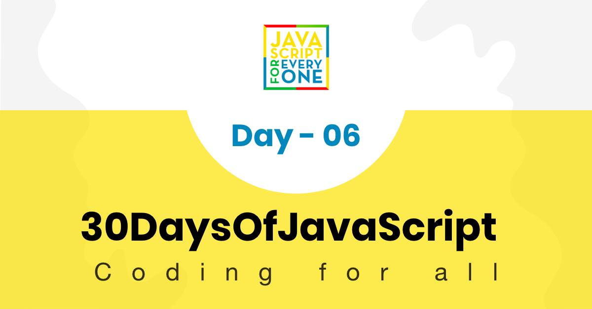

Most of the activities we do in life are full of repetitions. Imagine if I ask you to print out from 0 to 100 using console.log(). To implement this simple task it may take you 2 to 5 minutes, such kind of tedious and repetitive task can be carried out using loop. If you prefer watching the videos, you can checkout the video tutorials
In programming languages to carry out repetitive task we use different kinds of loops. The following examples are the commonly used loops in JavaScript and other programming languages.
// For loop structure
for(initialization, condition, increment/decrement){
// code goes here
}
for(let i = 0; i <= 5; i++){
console.log(i)
}
// 0 1 2 3 4 5
for(let i = 5; i >= 0; i--){
console.log(i)
}
// 5 4 3 2 1 0
for(let i = 0; i <= 5; i++){
console.log(`${i} * ${i} = ${i * i}`)
}
0 * 0 = 0
1 * 1 = 1
2 * 2 = 4
3 * 3 = 9
4 * 4 = 16
5 * 5 = 25
const countries = ['Finland', 'Sweden', 'Denmark', 'Norway', 'Iceland']
const newArr = []
for(let i = 0; i < countries.length; i++){
newArr.push(countries[i].toUpperCase())
}
// ["FINLAND", "SWEDEN", "DENMARK", "NORWAY", "ICELAND"]
Adding all elements in the array
const numbers = [1, 2, 3, 4, 5]
let sum = 0
for(let i = 0; i < numbers.length; i++){
sum = sum + numbers[i] // can be shorten, sum += numbers[i]
}
console.log(sum) // 15
Creating a new array based on the existing array
const numbers = [1, 2, 3, 4, 5]
const newArr = []
let sum = 0
for(let i = 0; i < numbers.length; i++){
newArr.push( numbers[i] ** 2)
}
console.log(newArr) // [1, 4, 9, 16, 25]
const countries = ['Finland', 'Sweden', 'Norway', 'Denmark', 'Iceland']
const newArr = []
for(let i = 0; i < countries.length; i++){
newArr.push(countries[i].toUpperCase())
}
console.log(newArr) // ["FINLAND", "SWEDEN", "NORWAY", "DENMARK", "ICELAND"]
let i = 0
while (i <= 5) {
console.log(i)
i++
}
// 0 1 2 3 4 5
let i = 0
do {
console.log(i)
i++
} while (i <= 5)
// 0 1 2 3 4 5
We use for of loop for arrays. It is very hand way to iterate through an array if we are not interested in the index of each element in the array.
for (const element of arr) {
// code goes here
}
const numbers = [1, 2, 3, 4, 5]
for (const num of numbers) {
console.log(num)
}
// 1 2 3 4 5
for (const num of numbers) {
console.log(num * num)
}
// 1 4 9 16 25
// adding all the numbers in the array
let sum = 0
for (const num of numbers) {
sum = sum + num
// can be also shorten like this, sum += num
// after this we will use the shorter synthax(+=, -=, *=, /= etc)
}
console.log(sum) // 15
const webTechs = [
'HTML',
'CSS',
'JavaScript',
'React',
'Redux',
'Node',
'MongoDB'
]
for (const tech of webTechs) {
console.log(tech.toUpperCase())
}
// HTML CSS JAVASCRIPT REACT NODE MONGODB
for (const tech of webTechs) {
console.log(tech[0]) // get only the first letter of each element, H C J R N M
}
const countries = ['Finland', 'Sweden', 'Norway', 'Denmark', 'Iceland']
const newArr = []
for(const country of countries){
newArr.push(country.toUpperCase())
}
console.log(newArr) // ["FINLAND", "SWEDEN", "NORWAY", "DENMARK", "ICELAND"]
Break is used to interrupt a loop.
for(let i = 0; i <= 5; i++){
if(i == 3){
break
}
console.log(i)
}
// 0 1 2
The above code stops if 3 found in the iteration process.
We use the keyword continue to skip a certain iterations.
for(let i = 0; i <= 5; i++){
if(i == 3){
continue
}
console.log(i)
}
// 0 1 2 4 5
🌕 You are so brave, you made it to this far. Now, you have gained the power to automate repetitive and tedious tasks. You have just completed day 6 challenges and you are 6 steps a head in to your way to greatness. Now do some exercises for your brain and for your muscle.
const countries = [
'Albania',
'Bolivia',
'Canada',
'Denmark',
'Ethiopia',
'Finland',
'Germany',
'Hungary',
'Ireland',
'Japan',
'Kenya'
]
const webTechs = [
'HTML',
'CSS',
'JavaScript',
'React',
'Redux',
'Node',
'MongoDB'
]
const mernStack = ['MongoDB', 'Express', 'React', 'Node']
Iterate 0 to 10 using for loop, do the same using while and do while loop
Iterate 10 to 0 using for loop, do the same using while and do while loop
Iterate 0 to n using for loop
Write a loop that makes the following pattern using console.log():
#
##
###
####
#####
######
#######
Use loop to print the following pattern:
0 x 0 = 0
1 x 1 = 1
2 x 2 = 4
3 x 3 = 9
4 x 4 = 16
5 x 5 = 25
6 x 6 = 36
7 x 7 = 49
8 x 8 = 64
9 x 9 = 81
10 x 10 = 100
Using loop print the following pattern
i i^2 i^3
0 0 0
1 1 1
2 4 8
3 9 27
4 16 64
5 25 125
6 36 216
7 49 343
8 64 512
9 81 729
10 100 1000
Use for loop to iterate from 0 to 100 and print only even numbers
Use for loop to iterate from 0 to 100 and print only odd numbers
Use for loop to iterate from 0 to 100 and print only prime numbers
Use for loop to iterate from 0 to 100 and print the sum of all numbers.
The sum of all numbers from 0 to 100 is 5050.
Use for loop to iterate from 0 to 100 and print the sum of all evens and the sum of all odds.
The sum of all evens from 0 to 100 is 2550. And the sum of all odds from 0 to 100 is 2500.
Use for loop to iterate from 0 to 100 and print the sum of all evens and the sum of all odds. Print sum of evens and sum of odds as array
[2550, 2500]
Develop a small script which generate array of 5 random numbers
Develop a small script which generate array of 5 random numbers and the numbers must be unique
Develop a small script which generate a six characters random id:
5j2khz
Develop a small script which generate any number of characters random id:
fe3jo1gl124g
xkqci4utda1lmbelpkm03rba
Write a script which generates a random hexadecimal number.
'#ee33df'
Write a script which generates a random rgb color number.
rgb(240,180,80)
Using the above countries array, create the following new array.
["ALBANIA", "BOLIVIA", "CANADA", "DENMARK", "ETHIOPIA", "FINLAND", "GERMANY", "HUNGARY", "IRELAND", "JAPAN", "KENYA"]
Using the above countries array, create an array for countries length'.
[7, 7, 6, 7, 8, 7, 7, 7, 7, 5, 5]
Use the countries array to create the following array of arrays:
[
['Albania', 'ALB', 7],
['Bolivia', 'BOL', 7],
['Canada', 'CAN', 6],
['Denmark', 'DEN', 7],
['Ethiopia', 'ETH', 8],
['Finland', 'FIN', 7],
['Germany', 'GER', 7],
['Hungary', 'HUN', 7],
['Ireland', 'IRE', 7],
['Iceland', 'ICE', 7],
['Japan', 'JAP', 5],
['Kenya', 'KEN', 5]
]
In above countries array, check if there is a country or countries containing the word 'land'. If there are countries containing 'land', print it as array. If there is no country containing the word 'land', print 'All these countries are without land'.
['Finland','Ireland', 'Iceland']
In above countries array, check if there is a country or countries end with a substring 'ia'. If there are countries end with, print it as array. If there is no country containing the word 'ai', print 'These are countries ends without ia'.
['Albania', 'Bolivia','Ethiopia']
Using the above countries array, find the country containing the biggest number of characters.
Ethiopia
Using the above countries array, find the country containing only 5 characters.
['Japan', 'Kenya']
Find the longest word in the webTechs array
Use the webTechs array to create the following array of arrays:
[["HTML", 4], ["CSS", 3],["JavaScript", 10],["React", 5],["Redux", 5],["Node", 4],["MongoDB", 7]]
An application created using MongoDB, Express, React and Node is called a MERN stack app. Create the acronym MERN by using the array mernStack
Iterate through the array, ["HTML", "CSS", "JS", "React", "Redux", "Node", "Express", "MongoDB"] using a for loop or for of loop and print out the items.
This is a fruit array , ['banana', 'orange', 'mango', 'lemon'] reverse the order using loop without using a reverse method.
Print all the elements of array as shown below.
const fullStack = [
['HTML', 'CSS', 'JS', 'React'],
['Node', 'Express', 'MongoDB']
]
HTML
CSS
JS
REACT
NODE
EXPRESS
MONGODB
🎉 CONGRATULATIONS ! 🎉